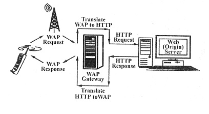

Q. : What is wireless application protocol (WAP) gateway? How does it work?
Ans : WAP (Wireless Application Protocol) is a specification for a set of communication protocols to standardize the way that wireless devices, such as cellular telephones and radio transceivers, can be used for Internet access, including e-mail, the World Wide Web, newsgroups, and instant messaging. While Internet access has been possible in the past, different manufacturers have used different technologies. In the future, devices and service systems that use WAP will be able to interoperate.
The WAP gateway is the device that logically sits between the client (called as WAP device) and the origin server. A WAP device is any mobile device such as a mobile phone or a PDA that can be used to access mobile computing services. The whole idea is that the device can be-any mobile device as long as it supports WAP. An origin server is any Web server on the Internet. This is just another term for the same concept.
The WAP gateway enables a WAP device to communicate with an origin server. In the normal Internet architecture, both the client (a Web browser) and the server (a Web server) understand HTTP protocol. Therefore, no such gateway is required between them. However, in case of WAP; the client (a WAP device) runs WAP as the communications protocol - not HTTP The server (the origin server) continues to run HTTP as before. Therefore, translation is required between the two. This is precisely what a WAP gateway does. It acts as an interpreter that does two functions-
(i) It takes WAP requests sent by the WAP device and translates them to HTTP requests for forwarding them on to the origin server.
(ii) It takes HTTP responses sent by the origin server and translates them to WAP responses for forwarding them on to the WAP device.
This is shown in figure
